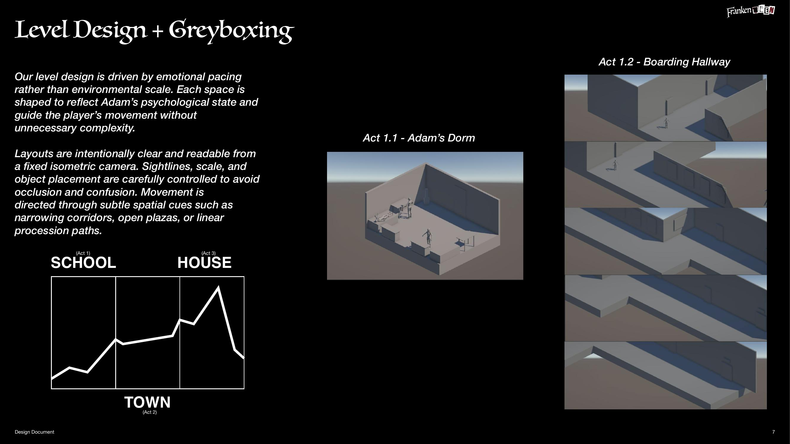
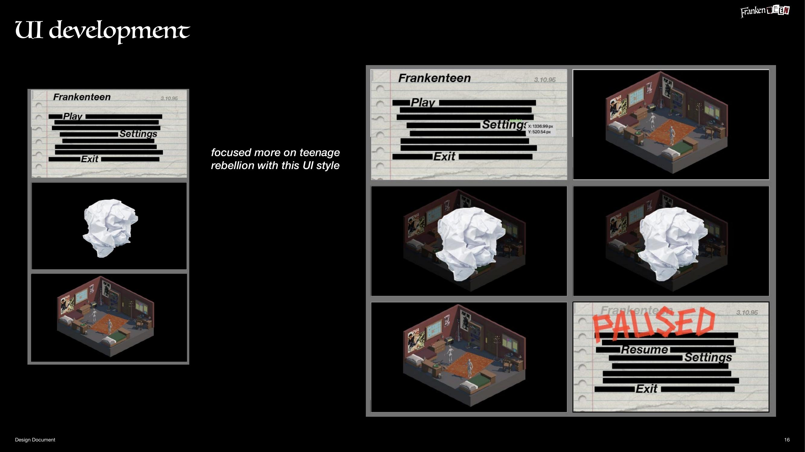
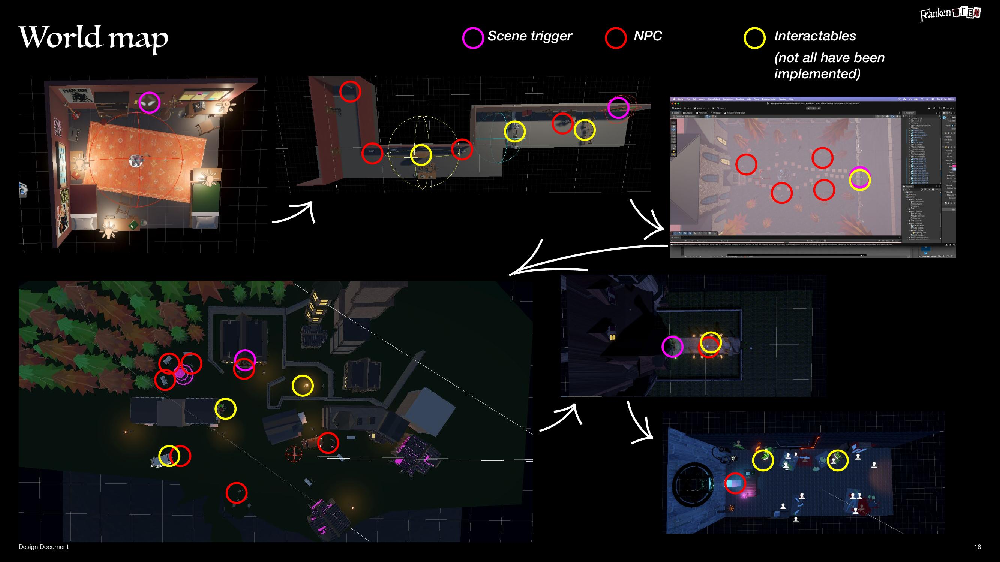

A top-down isometric retelling of Frankenstein as teenage rebellion. Adam runs from boarding school to confront the man who made him, and the guitar strapped to his back is the only input the game ever asks for: exploration, dialogue, music, and confrontation, all through one mechanic.
Recorded directly from the Unity editor during Act 3 development. This is the section I owned end to end.
FrankenTeen reinterprets Mary Shelley's Frankenstein through a coming-of-age lens rather than a horror one. The Creature becomes Adam: a rebellious teenager navigating expectation, control, and emotional isolation rather than literal monstrosity. The narrative stays linear, but player input shapes emotional tone rather than plot direction. Dialogue choices reflect Adam's stance in the moment, defensive, dismissive, vulnerable, or confrontational, and those tonal shifts carry through to the final confrontation with Victor.
The world is built from gothic architecture, tall arches, heavy stone, vertical weight, with Adam's punk identity deliberately disrupting it. The guitar, his posture, his attitude are all visual friction against the environment around him. Across three acts, school, town, and mansion, the spatial design moves from confinement to rebellion to intimate confrontation.
The core idea is simple to state and harder to build well: the player can "play rock music" at certain NPCs or objects, and that single action changes what's possible around it. The guitar is always attached to Adam, so the same input context-switches between interaction, dialogue initiation, performance, and, in confrontational moments, an expressive combat action. The control scheme stays simple while the guitar carries the entire thematic weight of the game: it's identity and tool at once.
Most of the code is self-written. A couple of swap and handler methods were adapted from an earlier project, and I used AI assistance to debug a persistent collider issue during Act 3 development.
Level design followed emotional pacing rather than environmental scale. Each space is shaped to reflect Adam's psychological state and guide movement without unnecessary complexity. Layouts stay readable from a fixed isometric camera: sightlines, scale, and object placement are controlled to avoid occlusion, and movement is directed through narrowing corridors, open plazas, and linear procession paths rather than explicit signage.

The first pass at UI leaned gothic, matching the architecture. The main feedback after that phase was to lean harder into the teenage rebellion side of the story rather than the horror side. The visual language shifted toward 90s zine culture: Raygun magazine, experimental typography, torn-paper textures. The pause and title screens became a notebook page with marker-scrawled menu items, which reads instantly as a teenager defacing schoolwork rather than a gothic interface.

Worth being direct about scope here: this style direction was fully designed but not fully wired into the shipped build given the time available. What's shown is the intended visual system, built and ready, rather than a completed in-game menu.
All assets were modelled by the team, with buildings and structures kept as modular as possible so they could translate across different scenes without rebuilding from scratch each time. The world map below tracks scene triggers, NPCs, and interactables across the three acts, not all of which made it into the final implemented build.

Each of the three of us self-assessed our contribution out of 100 against workload, initiative, collaboration, and responsibility. Mine sat at Act 3: the mansion, the emotional and narrative peak of the game.
We built a short demo level around the core "play rock music" mechanic, letting testers try all three songs and their three functions. We deliberately said as little as possible going in, since anything the tutorial couldn't explain on its own was treated as a design gap, not a briefing gap. Findings were sorted into four bands: works fine, urgent, not urgent but nice, and out of scope.
The scene transition between the room and the demo level broke repeatedly during development, and it stayed frustrating until a teammate helped me track down the actual issue. That was a useful reminder that asking for help early costs far less than debugging alone for another three hours. The more personal the story got, the more responsibility I felt to get Act 3 right specifically, since it's where Adam finally confronts Victor and the whole emotional arc has to land. Moving forward, the priority isn't more content. It's sharpening the gate glitch, the key binding clarity, and the NPC readability so the existing systems feel as intentional as the concept already is.